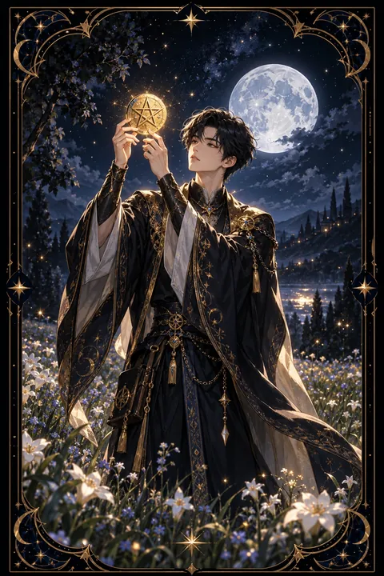

펜타클 시종 카드 — 배움의 씨앗을 심는 때
펜타클 시종 카드 한눈에 보기
펜타클 시종 카드 상징 읽기

동네보살의 카드 그림은 전통 라이더–웨이트 덱의 뜻을 새 그림으로 옮긴 것입니다. 아래 상징 설명은 전통 덱의 그림을 기준으로 합니다.
펜타클 시종에는 꽃이 핀 들판에 선 젊은이가 금빛 동전을 두 손으로 들어 올려 조심스럽게 살피는 장면이 담겨 있습니다. 온 시선을 동전에 모은 표정은 배움을 대하는 진지함과 호기심을 나타냅니다.
젊은이 뒤로 보이는 가지런히 갈린 밭은 씨앗을 심을 준비가 끝났다는 신호입니다. 아직 수확은 없지만 가꾸기만 하면 결실을 볼 수 있는 가능성의 땅입니다.
초록 들판과 피어난 꽃들은 새로 시작하는 일의 싱그러운 기운을 보여 줍니다. 멀리 보이는 산은 지금은 멀지만 언젠가 오르게 될 목표를 뜻합니다.
시종이라는 자리는 배우는 사람이자 소식을 전하는 사람을 의미합니다. 이 카드에서 시종이 들고 있는 것은 돈 그 자체라기보다 현실에서 무언가를 이루어 낼 수 있는 기회의 씨앗입니다. 손에 쥔 것을 소중히 여기는 태도가 미래를 여는 열쇠라는 가르침이 담겨 있습니다.
펜타클 시종 카드 정방향 뜻
정방향 펜타클 시종은 새로운 배움과 기회가 찾아오는 시기를 뜻합니다. 공부를 시작하거나 새로운 기술을 익히거나 처음 해 보는 일에 도전하기에 알맞은 흐름입니다.
이 카드의 힘은 화려한 재능보다 성실함에 있습니다. 작은 것 하나도 진지하게 들여다보고 차근차근 익혀 가는 태도가 좋은 결과를 부릅니다. 합격 소식이나 입사 제안, 배움과 관련된 반가운 연락이 올 수도 있습니다.
목표가 있다면 구체적이고 현실적인 계획으로 옮겨 적어 보세요. 한꺼번에 많이 하려 하기보다 매일 조금씩 이어 가는 편이 이 카드의 흐름과 잘 맞습니다. 가계부 쓰기나 작은 저축처럼 살림을 새로 배우는 일에도 좋은 시기입니다. 오늘 심은 작은 씨앗이 시간이 지나 든든한 결실로 자라납니다. 배운 내용을 짧게라도 기록해 두면 성장의 흔적이 눈에 보여 힘이 납니다.
펜타클 시종 카드 역방향 뜻
역방향 펜타클 시종은 배우려는 마음은 있지만 실행이 따라가지 못하는 상태를 보여 줍니다. 계획을 세우는 데만 시간을 쓰고 첫걸음을 계속 미루거나 시작했다가 금방 흥미를 잃는 모습일 수 있습니다.
결과를 너무 빨리 바라거나 처음부터 지나치게 큰 목표를 세운 것이 원인이 되기도 합니다. 현실과 동떨어진 목표는 오히려 의욕을 꺾습니다. 반대로 눈앞의 작은 일에만 매달려 큰 그림을 놓쳐 버리기도 합니다.
그렇다고 재능이 모자란 사람이라는 판정은 아닙니다. 목표를 절반으로 줄이고 매일 지킬 수 있는 분량부터 정해 보세요. 하루 십오 분이라도 꾸준히 이어 가면 흐트러진 집중력이 돌아옵니다. 실패한 경험도 배움의 일부로 받아들이면 다음 시작이 훨씬 가벼워집니다. 작은 성공을 한 번 맛보면 멈췄던 배움이 다시 굴러가기 시작합니다.
연애에서 펜타클 시종 카드
솔로라면 천천히 다가오는 풋풋한 인연을 기대해 볼 만한 시기입니다. 스터디나 강좌, 취미 모임처럼 무언가를 함께 배우는 자리에서 호감이 싹트기 쉽습니다. 서두르기보다 대화를 나누며 서로를 알아 가는 과정을 즐겨 보세요.
연애 중이라면 관계를 새롭게 배우는 단계에 들어섭니다. 상대가 무엇을 좋아하고 어떤 말에 기뻐하는지 관심을 기울이면 관계가 한층 깊어집니다. 다만 마음을 표현하는 데 서툴러 상대가 오해할 수 있으니 작은 표현이라도 자주 건네는 것이 좋습니다. 둘이 같이 배울 거리를 하나 정하거나 작은 목표를 함께 세워 보는 것도 관계에 싱그러운 기운을 불어넣습니다. 진지하고 성실한 태도가 이 카드가 말하는 사랑의 시작입니다. 서툰 표현이라도 진심이 담기면 상대는 그 마음을 알아봅니다.
재회·속마음 질문에서 펜타클 시종 카드
재회 질문에서 펜타클 시종이 나오면 다시 시작할 수 있는 작은 기회가 찾아온다는 뜻입니다. 지난날의 익숙한 방식을 되풀이하기보다 처음 만나는 사람처럼 새로 알아 가는 자세가 필요합니다. 헤어진 뒤 무엇을 배우고 어떻게 달라졌는지 스스로 정리해 보세요. 가벼운 안부 연락처럼 부담 없는 첫걸음이 좋은 반응을 이끌 수 있습니다. 결과를 서두르면 싹이 트기 전에 말라 버리니 천천히 신뢰를 다시 심어 간다는 마음으로 접근하는 것이 좋습니다. 상대의 답이 늦더라도 재촉하지 말고 자신의 하루를 성실히 채우며 기다려 보세요. 그 성실함이 다시 만날 이유가 되어 줍니다.
일·금전에서 펜타클 시종 카드
직장과 일의 영역에서는 처음 맡는 업무나 첫 직장, 수습 기간을 시작하는 흐름에 잘 맞는 카드입니다. 궁금한 것은 그때그때 묻고 배운 내용은 메모로 남기는 태도가 빠른 성장으로 이어집니다. 교육 과정이나 자격증 공부를 시작하기에도 알맞습니다. 작은 일도 끝까지 책임지는 모습이 윗사람의 눈에 오래 남습니다.
돈 관리 면에서는 살림을 체계적으로 꾸리는 법을 익히기 좋은 시기입니다. 가계부를 쓰기 시작하거나 매달 일정 금액을 저축하는 작은 습관을 들여 보세요. 지금은 큰돈보다 돈을 다루는 감각을 기르는 것이 더 값진 밑천이 됩니다. 매달 말에 한 번씩 지출을 돌아보는 시간을 가져 보세요. 새로 배우는 기술이 있다면 매일 짧게라도 손에 익히는 시간을 떼어 두세요.
펜타클 시종 카드는 예일까 아니오일까
새로운 기회와 배움의 씨앗이 손에 들어온다는 의미여서 예에 가깝습니다. 결과는 꾸준히 가꾸는 만큼 천천히 자란다는 점을 기억하세요. 거꾸로 나온 경우라면 실행을 미루는 습관을 고치는 것이 먼저라 조건부입니다.
자주 묻는 질문
펜타클 시종 카드 역방향은 나쁜 뜻인가요?
역방향 펜타클 시종은 배우려는 마음은 있지만 실행이 따라가지 못하는 상태를 보여 줍니다. 계획을 세우는 데만 시간을 쓰고 첫걸음을 계속 미루거나 시작했다가 금방 흥미를 잃는 모습일 수 있습니다.
펜타클 시종 카드가 연애 질문에 나오면요?
솔로라면 천천히 다가오는 풋풋한 인연을 기대해 볼 만한 시기입니다. 스터디나 강좌, 취미 모임처럼 무언가를 함께 배우는 자리에서 호감이 싹트기 쉽습니다. 서두르기보다 대화를 나누며 서로를 알아 가는 과정을 즐겨 보세요.
타로 카드는 어떻게 뽑나요?
타로 카드 페이지에서 78장을 섞으면 그중 22장이 펼쳐집니다. 마음이 가는 세 장을 고르면 과거·현재·미래 자리에 놓이고, 한 장씩 뒤집어 자리와 방향에 맞는 풀이를 읽습니다. 정방향과 역방향은 섞는 순간 정해집니다.